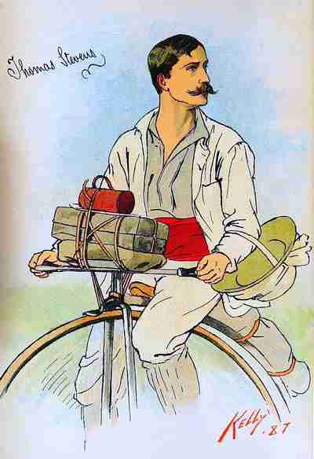

Cette publication est la traduction en cours du livre : Around The World On a Bicycle, de Thomas Stevens.
Il y a plus de 130 ans, Thomas Stevens, citoyen britannique résidant aux Etats-Unis, prit la route sur son grand-bi de marque Columbia, le 22 avril 1884, à San Francisco (États-Unis) ; il arriva le 17 décembre 1886 à Yokohama (Japon) après avoir fait le tour du monde et parcouru près de 22000 kilomètres avec son grand-bi.
Thomas Stevens est le premier à avoir fait le tour du monde à bicycle (un grand-bi en l'occurence).
Il a écrit le récit de ce voyage, publié sous forme de 2 volumes sous le titre : Around The World On A Bicycle.
Découvrez et vivez cette aventure, pour la première fois en langue française.
Chacun des deux tomes de ce voyage fait plus de 500 pages ; la traduction prendra donc du temps, beaucoup de temps.
Je me suis focalisé sur le contenu et sur un affichage rapide des pages, et donc un site sans tape à l'oeil, s'affichant aussi bien sur ordinateur que sur tablette et smartphone. La présentation est trompeusement simpliste au contraire du contenu ; en effet chaque chapitre est en fait émaillé de nombreuses notes que nous avons ajoutées, concernant les lieux traversés, les personnes rencontrées, les évènements évoqués ; de même chaque chapitre contient plusieurs voire de nombreuses photos et exceptionnellement une brève animation son ou vidéo.
Sachez que :
Au fur et à mesure de la traduction du texte original nous avons inséré des notes et informations concernant certains éléments du texte.
Ces notes étant relativement nombreuses, il nous a semblé plus commode pour le lecteur de procéder ainsi que de devoir se reporter en fin de page pour pouvoir les lire, avec la difficulté que cela suppose pour retourner à l'emplacement précis de la lecture.
Ces ajouts Ndt ( Notes du Traducteur ), pour les démarquer du récit proprement dit, sont insérés entre des crochets [[ ]] et sont rédigés en italique, de couleur marron clair.
Au sujet des photos : nous tâchons chaque fois que possible d'insérer des photos les plus proches de l'époque du voyage de Thomas Stevens, afin de vous offrir un regard sur les sites qu'il a vus et traversés.
Au sujet des liens : à part quelques liens directement actifs, pour les autres il vous faut les copier et les coller dans la barre d'adresse de votre navigateur ; nous avons procédé de la sorte pour éviter les liens morts si ces sites disparaissent ou changent d'adresse ; ceci afin d'éviter d'être "déclassé" par les moteurs de recherche.
Traduction du mot bicycle : Thomas Stevens a fait son tour du monde en grand-bi. Nous avons conservé le terme bicycle car celui-ci désignait dans ces années 1870 à 1890 environ, le grand-bi, tant en anglais qu'en français.
Le mot grand-bi ( grand-bicycle ) a été utilisé à partir de l'invention de la bicyclette pour différencier les 2 véhicules. De même en anglais, à partir de l'invention de la bicyclette le bicycle (grand-bi donc) a été appelé ordinary (pour ordinary bicycle) ou highwheel (grande roue) ou penny-farthing pour le différencier de la nouvelle venue.
Il nous a donc semblé opportun de conserver le terme en vigueur en France à l'époque du voyage de Thomas Stevens. Aussi, tout au long de cette traduction, le terme bicycle se réfère au grand-bi. c.q.f.d Ref : ParisVelocipedia https://tinyurl.com/bicycle-cqfd
Le style du récit : ce voyage a été publié en 1887 ; Thomas Stevens a fait son voyage de 1884 à 1886 à une époque où il n'y a pas de magnétophone, pas de caméra et où les appareils photos sont à plaques, très encombrants, nécessitent de longs temps de pose donc pas d'instantané, de photo prise sur le vif. Aussi pour rendre compte le plus précisément possible du voyage, des impressions, des faits, des évènements, des lieux, il n'y a que les mots. C'est une époque où les textes de références sont les auteurs classiques, les écrivains romantiques, les récits d'aventure ; pas de manga, pas de textes limités à 146 signes... Les descriptions sont nombreuses et souvent assez longues, les phrases font souvent plusieurs lignes, le texte est descriptif, détaillé, vivant, contient des références... On est loin de la littérature minimaliste.
Pour info :
Le but de ce site est de faire découvrir un formidable voyage, un récit passionnant, et un homme tout autant passionnant, Thomas Stevens.
Page précédente - Page suivante
ADMINISTRATIVIA
Dernière mise à jour de cette page : 02 mai 2017
URL : https://orkic.github.io/bicygonzo/atwoab/avantpropos.html
Contactez-nous : Contact
Website © Copyright - ef. Bicy Gonzo.